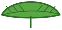

Scegli un gioco
-


Botta e Ghianda
Tino e Gino si rimandano una ghianda: chi la lascia passare perde il punto. Sfida Gino o gioca in due!
Gioca -


Tino e la Ghianda d'Oro
Gli agenti della Tari hanno rapito Gino! Con cappello e frusta, Tino attraversa radici, tempio sepolto e uffici della Tari tra trappole, massi, nastri trasportatori e timbri giganti, fino alla Ghianda d'Oro.
Gioca -
Tino Bum!
Sfida a colpi di ghiande tra isole sospese: scegli il mezzo e due oggetti, prendi la mira e tieni d'occhio il vento. Contro Gino, in due o contro gli agenti della Tari!
Gioca -

Gino Volante
Tino lancia Gino con l'altalena: al momento giusto il lancio è perfetto! Poi Gino apre la foglia e vola a colpi d'ala tra fiori, tronchi e nuvole. Quanti metri riesci a fare?
Gioca -
Ghiande e Mattoncini
Con l'asse di Tino o la foglia di Gino, fai rimbalzare la ghianda e rompi tutti i mattoncini: 20 livelli tra prato, spiaggia, bosco e uffici della Tari, con petardi, miele, fionda, ghiande di fuoco e gli agenti della Tari alla fine di ogni mondo.
Gioca -
Sparabolle
Tino spara bolle di ghiande, bacche e fiori: tre uguali vicine scoppiano e quelle rimaste appese cadono giù. 24 livelli tra prato, spiaggia, bosco e uffici della Tari, con petardi, fulmini, bolle gelate, robivecchi da collezionare e gli agenti della Tari da colpire. Più partita infinita e sfida in due!
Gioca -
Tino Pro Skate
Hanno rubato lo skate di Gino! Tino corre sullo skate per Firenze, disegnata a fumetto: dalle Cascine a Novoli, dai cantieri della tramvia al centro. Salta coni, ruspe e turisti, scivola su corrimano e rotaie, fa trick e combo e abbatte gli agenti della Tari saltandoci in testa. Con la Grinta piena, la Botta di Grinta stordisce tutti!
Gioca -
Tino Flipper
Il flipper di Tino tra le radici della grande quercia: un tavolo alto due schermi con quattro flipper, la radice lunga, il giro della morte, il tunnel verso la galleria alta, l'agente col timbro da stordire, avventure e multiball fino alla Ghianda d'Oro, sette robivecchi da guadagnare con le imprese. E c'è ancora il tavolo al neon come bonus!
Gioca -

Salta, Tino!
Tino salta da solo di ramo in ramo su per la grande quercia: tu lo sposti a destra e a sinistra. Dalle radici al tronco, tra le foglie della chioma, poi di nuvola in nuvola fino alle stelle. Attenti ai rami secchi e agli agenti della Tari (si stordiscono saltandoci in testa)! Funghi che fanno volare, cappello a elica, bolla e calamita per le ghiande.
Gioca -
Tino Golf
Minigolf in 3D in un mondo morbido e colorato: dossi, girandole, laghetti, miele, campane che acchiappano la pallina, anelli magici, ascensori, pulsanti e buche di notte. Gioca l'avventura, sfida Gino o gioca in due!
Gioca